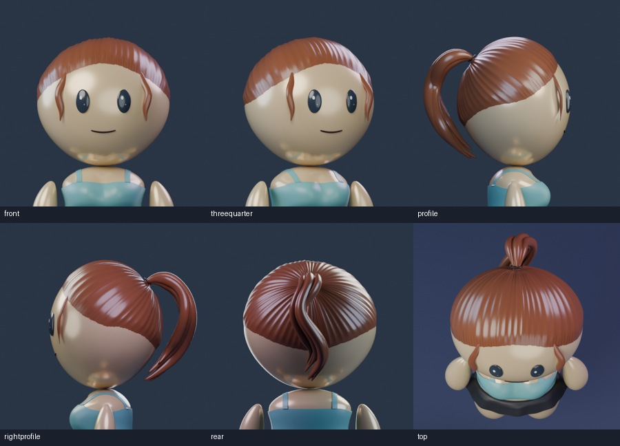
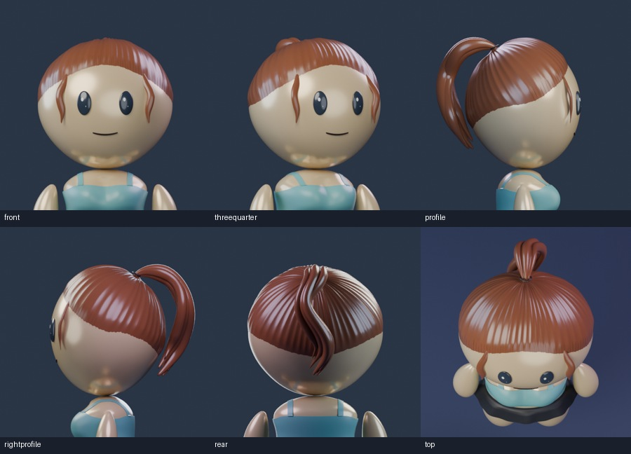
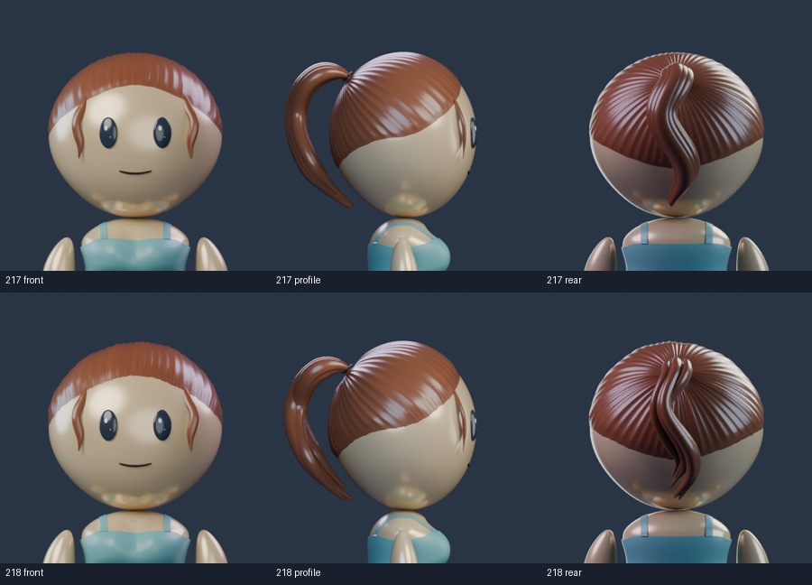

AVATAR REVIEW · 218
Layered ponytail flow
Individual sculpted locks flow around the retained side C and rear S curves. Broader swept crown volume and a crisp, strand-based root transition. All tail and front-lock controls are retained.
212’s old export put Fade in COLOR_1. Its original live viewer read opaque COLOR_0. Both references here use the intended alpha channel.
Rotate, zoom and mix tops with bottoms.
Existing face options
Saved source review
Fixed-studio Blender renders. This is a candidate for owner review.
Default

Low Departure
Highest

Flow Low
Flow High
Before and revised

Construction reference: ghd brushed-out ponytail waves and controlled gathered roots. The reference informs flow; this remains sculpted cartoon hair.